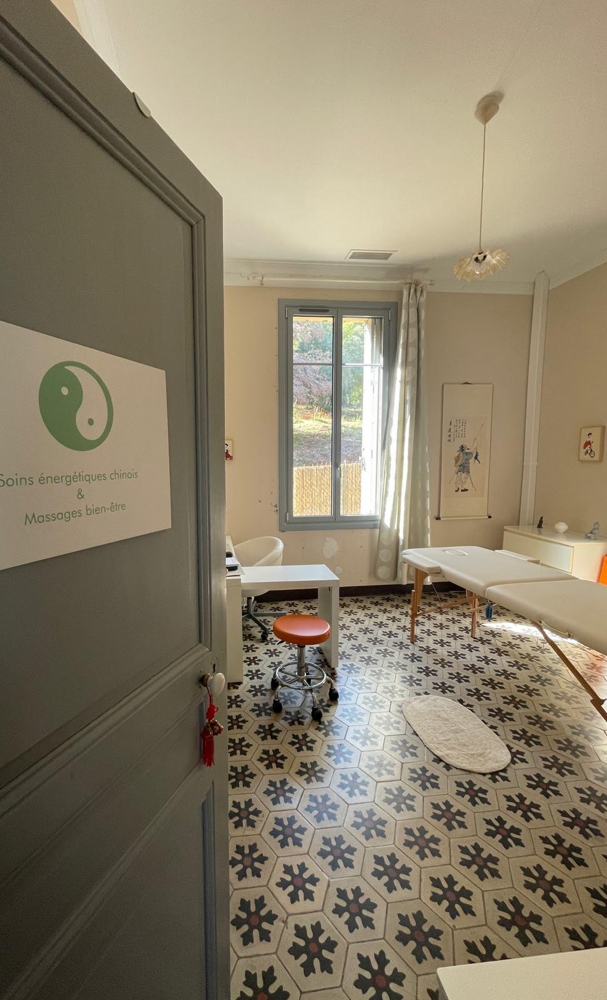

Un moment de détente profonde, en séance d'une heure ou d'une heure trente : massage chinois Tui Na, massage californien, réflexologie plantaire ou face cupping (NOUVEAU).

« Le massage entretient la libre circulation de l'énergie autant qu'il détend les muscles. »
Ces massages bien-être sont des soins de détente et de confort, non thérapeutiques. Réalisés sur table dans un cadre calme et chaleureux, ils s'adaptent à vos envies du jour : rythme, pression et zones travaillées sont ajustés avec vous en début de séance.
Deux formats sont proposés : 1 h ou 1 h 30, à choisir parmi les quatre techniques ci-dessous.
Réserver un MassageChaque massage se réserve en séance d'1 h ou d'1 h 30.
Massage traditionnel chinois, tonique et enveloppant, pratiqué le long des méridiens par pressions, frictions et pétrissages. Idéal pour dénouer les tensions musculaires, relancer la circulation et redynamiser le corps.
Massage doux aux longs mouvements fluides et enveloppants, huilé, qui apaise le système nerveux et procure une profonde relaxation. Parfait en période de stress ou de fatigue nerveuse.
La réflexologie plantaire repose sur la stimulation de zones réflexes situées sous les pieds, en lien avec les différents organes et fonctions du corps. Elle favorise la détente et contribue au rééquilibrage global de l’organisme.
Ventouses douces spécialement conçues pour le visage : elles stimulent la microcirculation, détendent les traits et redonnent de l'éclat au teint. Un soin détente et éclat inspiré de la tradition chinoise.
Choisissez votre massage et votre durée (1 h ou 1 h 30) lors de la réservation. Au cabinet, à Hyères, sur rendez-vous. Consulter les tarifs.
Réserver un Massage